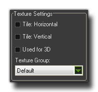
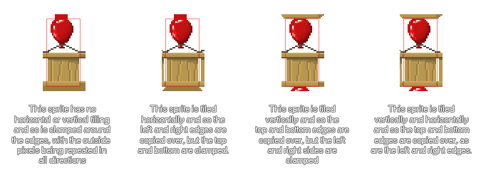

Texture Pages
This section deals with how GameMaker:Studio creates texture pages.
When you create a game with GameMaker:Studio, you will surely have created graphics to go along with it. These graphics are stored on Texture Pages which GameMaker:Studio builds for you
from all the image resources (backgrounds, tiles and sprites) that your game contains. Below is an example of a completed texture page :
 As you can see, the game graphics are all jumbled up together in such a way that they all fit on a power of 2 sized page, eg 512x512, 1024x512 etc... up to a maximum size of 2048x2048 pixels page. Please note, that even
if you have a resource that is larger than 2048px in size, this will be scaled down by half (and half again if necessary) until it fits on the maximum page size, it will not be split into sections over
various texture pages. The section below details the options available to you for defining how your image resources are stored on these texture pages.
As you can see, the game graphics are all jumbled up together in such a way that they all fit on a power of 2 sized page, eg 512x512, 1024x512 etc... up to a maximum size of 2048x2048 pixels page. Please note, that even
if you have a resource that is larger than 2048px in size, this will be scaled down by half (and half again if necessary) until it fits on the maximum page size, it will not be split into sections over
various texture pages. The section below details the options available to you for defining how your image resources are stored on these texture pages.
NOTE : This functionality is limited to the Professional Version of GameMaker:Studio.
Texture Settings
The sprite resource window and the background resource window both have a section titled Texture Settings, shown below :

Here you can define how the image is to be stored on the texture page as well as whether it is an image specifically for use with a 3D object and which texture page (if any) it has to be
assigned to. The first two options, Tile Horizontal and Tile Vertical relate to how the edges of the image will be created when placed on the texture page. An image that
is to be tiled will have the edges (horizontal or vertical) added to by the edges from the opposite side, while if no tiling is selected the sprite will be clamped and the edges pixels will be
repeated. The following image illustrates this :

Underneath those settings is the Used for 3D setting. This option is only available if the image size is a power of 2 (eg: 128x128 or 512x512) and it will force GameMaker:Studio
to place this image on its own unique texture page ready for use as a texture in your 3D world. There are no options associated with this as the tiling or clamping is controlled directly through
code. Note : Take care when using this option as you can quickly use up all the available VRAM, especially on mobile devices, if you have too many texture pages.
Now, when your game is large with a lot of artistic resources, it may be that the way GameMaker:Studio automatically creates these pages is not the optimum for getting the most out
of the target device, due to the fact that if a room in your game needs resources from 4 different texture pages, the device will have to swap these pages into (and out of) memory constantly,
which may cause a loss in performance. To that end, you have the option to tell GameMaker:Studio what images are to placed on any specific texture page, with the final aim being to
minimise the number of swaps being done in a game at any one time (texture pages can added from the Global Game Settings :
Texture Groups tab). It is also worth noting that in the individual platform tabs that can be found in the Global Game Settings there is
a button that permits you to view the texture pages that you have defined, as they would be created for each target.
It is worth noting that should you have a texture in your game that is larger than the texture page size, this image will be automatically scaled down by GameMaker:Studio to
make it fit within the texture page. This means that when you test your game on Windows, Ubuntu (Linux) or MacOSX the game may look fine as you are using larger texture pages, but on iOS (or any of the other
targets that require a smaller texture page size for optimal performance) the texture may look blurred or have artifacts. It is essential that you make sure your images are all able to fit on the smallest
of the texture page sizes that your game will use, and if not then you should split them into smaller images and then draw them together in your game to give the illusion of one large, complete, image.
Note : Before you go off splitting up your graphics over various texture pages, you should be aware that this is not always necessary, nor is it always the most efficient way to work.
Some games may be more CPU bound than GPU bound (see Advanced Use : Debugging) and those games will not benefit greatly from this optimisation,
and you should also consider whether it would not be better to have all your images on two texture pages and swap between them rather than spread out over several, with each one having a
lot of empty space that is just wasting memory.
© Copyright YoYo Games Ltd. 2013 All Rights Reserved